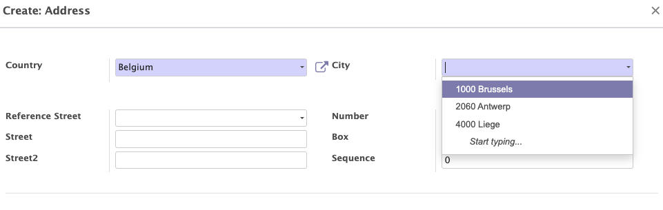
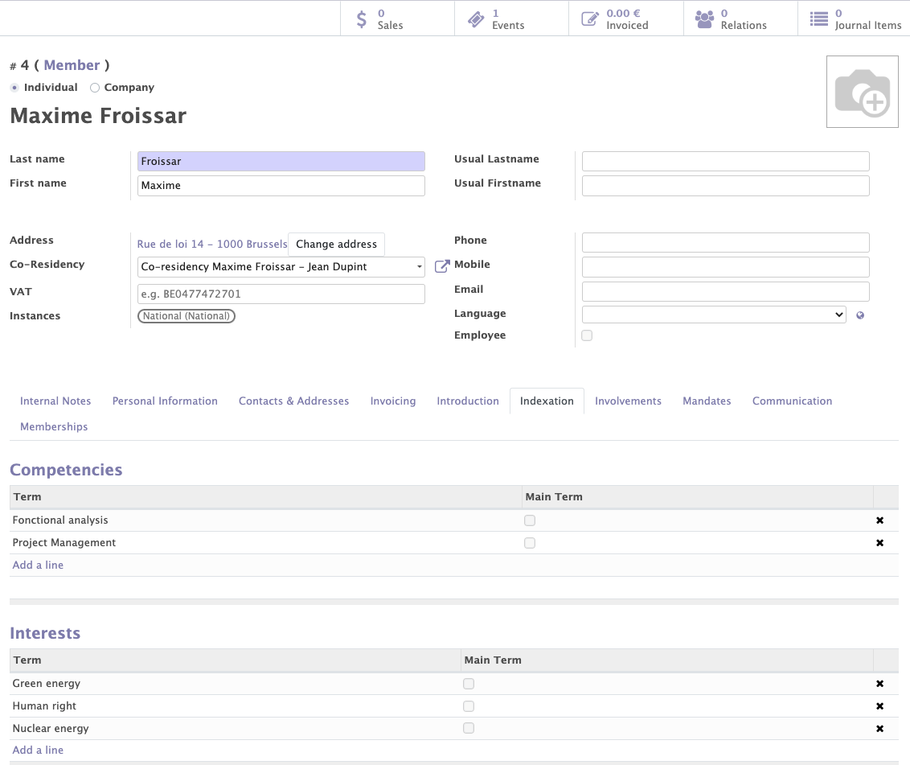
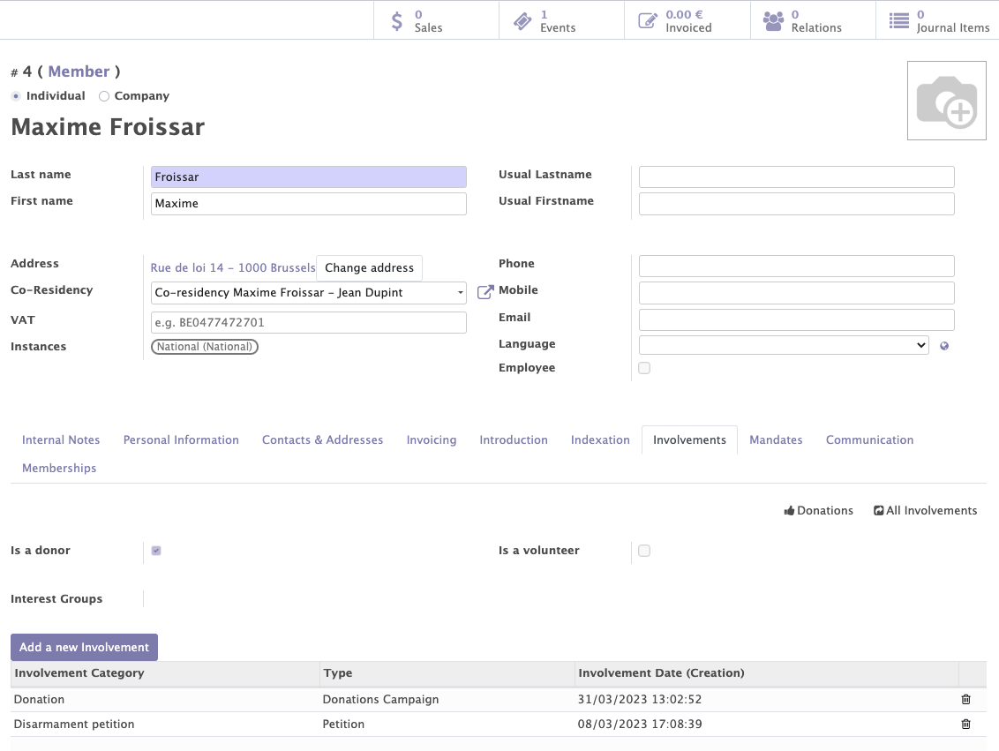
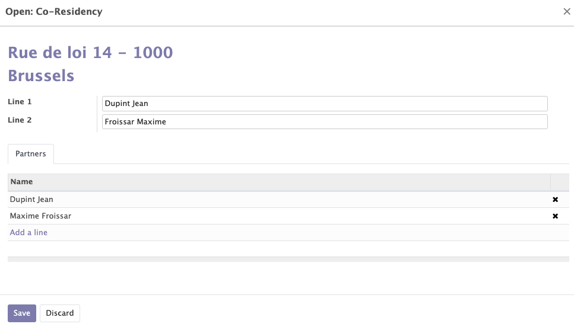
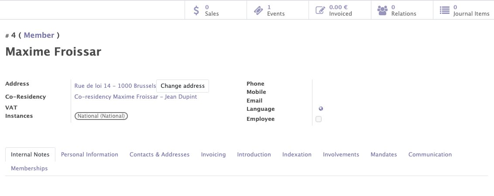
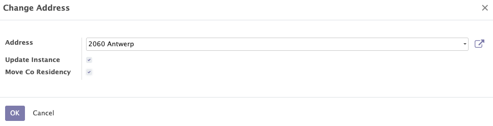

Contacts enrichment
The contact module - which is a central module in Mozaik - allows to manage the contacts related to your organisation / political party. It will give you access to:
- The general information about each contact (members, supporters, all other contacts)
- The interests & competencies of each contact
- The participations of each member (interactions with the organisation)
- The management of duplicates and co-residencies
- The membership management.
Contacts: People management (individuals & companies)
This functionality allows you to create, modify and manage the contacts (members/subscribers/other contacts) related to your organisation.
Various informations can be collected for each contact (individuals or companies):
- The standard information of a contact : name, first name, phone, address...
- Some personal information: age, gender, disability, social networks...
Address
The encoding of addresses on the contact form is facilitated by the auto-completion functionality that the system provides. This functionality allows you to choose the city and the street from a list of predefined choices. It is used to avoid encoding errors and helps detect duplicates.
 Depending on their address, the contacts are linked to a local group (<internal structure) of the organisation. When the address changes, the instance of the contact can also be updated. It is an option, not an obligation.
Depending on their address, the contacts are linked to a local group (<internal structure) of the organisation. When the address changes, the instance of the contact can also be updated. It is an option, not an obligation.
Example
A contact whose address is located in Brussels will belong to the Brussels local group of the organisation. If a member moves from Brussels to Antwerp, this member will now be related to the local group linked to the city of Antwerp.
The goal of people management
This feature allows you :
- To manage the information about your contacts.
- To get to know your members and supporters better.
- To use personal information of your members for membership purposes (ex: membership fees).

Indexation
Interests and competencies can be linked to contacts (members, supporters, other contacts). Those interests and competencies are chosen from a list of terms, called Thesaurus terms in Mozaik and can be adapted according to the needs of each organisation.
The goal of Thesaurus terms
Those interests and competencies are present for information purposes (to better know your members and supporters), but also to achieve specific targeting with the communication tools / mass mailings.
Example
I would like to send a newsletter around 'Nuclear energy' to members who are interested by this topic.
More informations about how to target contacts based on those informations in the chapter about the distribution list module.
Interests and competencies can:
- Be added manually by contacts during their registration.
Example
I am interested by the themes of 'nuclear energy' and 'human right'
- Automatically when a member registers for a specific event / survey or petition
Example
If the petition that is signed by a member concerns 'nuclear energy', the related 'Thesaurus term' can automatically be added as 'Interest' for this member.

Involvements
This functionality enables you to add all the interactions between your organisation and its members / supporters. The types of interactions can be defined by each organisation according to their needs (signature of a petition, participation to a volontary action...)
Goal of the involvements
Involvements allow you to get to know your contacts better / categorize them / keep a record of interactions with a particular contact over the years. These entries can be used to send mailings to your contacts in a very targeted manner.
Example
A member made a donation on 31/03/2023 and signed a petition about disarmement one week later. These participations will appear on his contact form and can be used in future mailings (Ex: send an email to all donors who have signed a given petition in the last 2 months)
How to add them ?
- An involvement can be added manually on a contact page.
- An involvement can be added automatically through a membership form.
- An involvement can be added automatically through the signature of a petition, the completion of a survey or the participation to an event.

Duplicates
A very elaborated duplicate check system has been implemented in Mozaik. It is based on :
- Name
- Phone
- Mobile
- Address
It helps you identify possible duplicates within your contacts database. Duplicates can then be easily modified, authorised or merged.
Info
When a duplicate is detected, a button “show all duplicates” appears on the contact form of the duplicate members. This button displays the list of contacts with one or more identical fields. You can either merge those contacts or indicate that they are no duplicates.
Co-residencies
When two or more people share the same address, they can be grouped into a co-residency. This indicates that those people are no duplicates but simply live in the same accommodation.
Co-residencies allow you to :
- Avoid duplicates within your contacts database.
- Link people from the same family to each other.
- Avoid sending 2 letters to the same address.
How to create a co-residency ?
You can create a co-residency by selecting your contacts, clicking on "action"--> "create a co-residency address” and entering the name of the co-residents in "line 1 and line 2"

Info
Once you have created a co-residency or allowed the duplicates, the "show all duplicates" button will disappear.

Tip
If you want to change the address of a person belonging to a co-residency, a button can be ticked to move the whole co-residency without breaking it.
